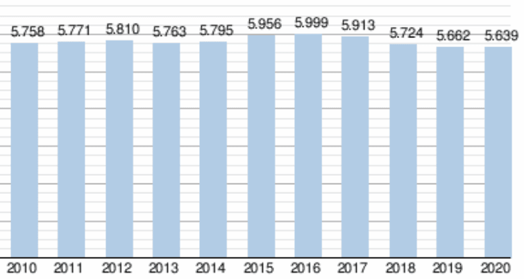

Viroinval est une commune belge située en Région wallonne, dans la province de Namur. Elle se trouve dans la vallée de la Viroin, près de la frontière française. La ville est entourée de collines boisées et est connue pour sa nature verdoyante et ses nombreux sentiers de randonnée.
Le centre-ville de Viroinval est petit et pittoresque, avec de nombreuses maisons en pierre et en brique datant du XVIIIe siècle. On y trouve également une église du XVIIe siècle, ainsi que plusieurs magasins, restaurants et cafés. La ville est également réputée pour ses ateliers d'artisanat, notamment la poterie et le travail du bois.
En dehors du centre-ville, Viroinval est également connu pour son château de Modave, un magnifique bâtiment du XVIIIe siècle situé sur une colline qui surplombe la vallée de la Viroin. Le château est ouvert au public et est entouré de jardins et de parcs. La région est également réputée pour ses vignobles et ses caves à vin.
En résumé, Viroinval est une ville paisible et charmante, entourée de collines verdoyantes et de vignobles, avec un centre-ville pittoresque et de nombreuses possibilités de randonnée et de loisirs en plein air.
La population totale de la commune, au 1er décembre 2019, est de 5 825 habitants, (2 874 hommes, 2 951 femmes) pour une superficie totale d’environ 120,90 km2, ce qui donne une densité de population de 48,18 habitants par km2.

Les carnavals des villages de Vierves-sur-Viroin, d'Olloy-sur-Viroin et de Treignes sont repris en tant que carnavals de la vallée du Viroin parmi les chefs-d’œuvre du Patrimoine oral et immatériel de la Fédération Wallonie-Bruxelles. Ces festivités comprennent à la fois un carnaval et un grand feu.